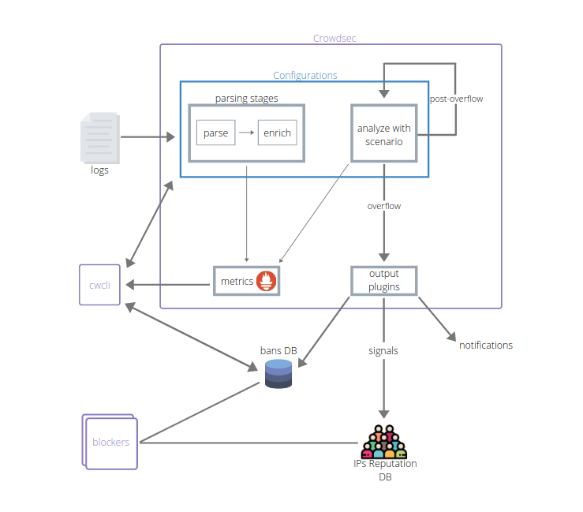

Home
Architecture¶

Components¶
Crowdsec ecosystem is based on the following components :
- Crowdsec is the lightweight service that processes logs and keeps track of attacks.
- cscli is the command line interface for humans, it allows you to view, add, or remove bans as well as to install, find, or update scenarios and parsers
- bouncers are the components that block malevolent traffic, and can be deployed anywhere in your stack
Moving forward¶
To learn more about Crowdsec and give it a try, please see :
- How to install Crowdsec
- Take a quick tour of Crowdsec and cscli features
- Observability of Crowdsec
- Understand Crowdsec configuration
- Deploy bouncers to stop malevolent peers
- FAQ
Don't hesitate to reach out if you're facing issues :